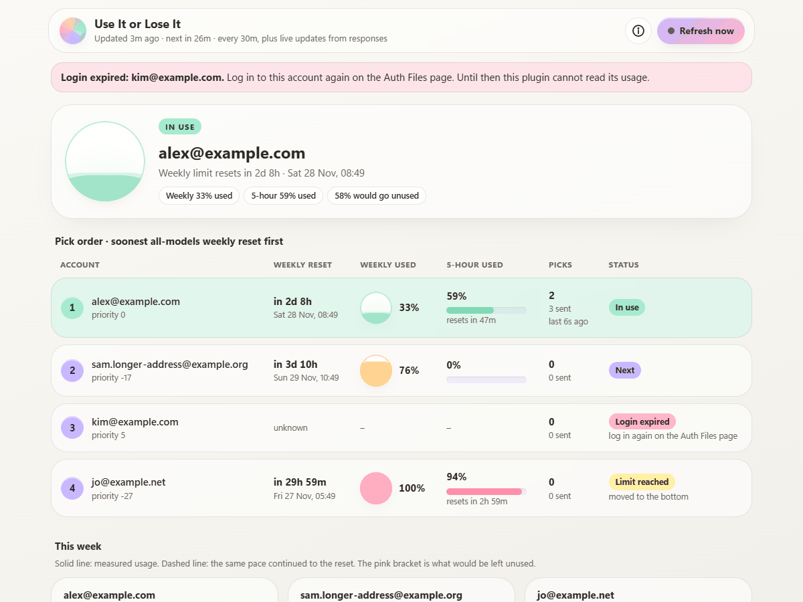

Reset-aware routing
Sends each request to the Claude account whose weekly limit resets soonest.
If you have several Claude Pro or Max subscriptions logged into CLIProxyAPI, Use It or Lose It sends each request to the account whose weekly limit resets soonest, so quota that is about to reset gets used instead of wasted.

Each Claude subscription has its own weekly limit, and each one resets on its own schedule. Whatever an account has not used by its reset is gone.
A proxy that spreads requests evenly, or always starts with the same account, does not know which account is about to reset. It can drain an account that still has days left while another account resets with most of its week unused.
Use It or Lose It orders your accounts by reset time, so the quota that expires first is spent first.
For every request that only Claude accounts can serve, the plugin takes the accounts CLIProxyAPI offers (it already skips disabled accounts and accounts cooling down after a rate limit) and puts them in this order:
Soonest weekly reset first. The account whose weekly limit resets next goes to the top, so its remaining quota is used before it expires.
The order fixes itself. When an account resets, its next reset is a week away, so it moves to the back by itself. Unlike a fixed priority, nothing needs reordering by hand. Priorities only break ties.
Full accounts go to the bottom. An account at 100% of its 5-hour or weekly limit is moved below every account that still has room.
Accounts with room again come back. If a limit resets early, the plugin clears the proxy's cooldown for that account so it can be picked again.
No data, no change. If there is no usage data for the first account, or a request could also go to another provider, CLIProxyAPI's normal routing is used.
Sends each request to the Claude account whose weekly limit resets soonest.
Checks usage every 30 minutes, never per request, and updates live from Anthropic's rate-limit response headers.
Accounts that hit their 5-hour or weekly limit move to the bottom until they have room again.
When an account has room again after an early reset, the proxy's cooldown for it is cleared.
Inside the CLIProxyAPI management panel: pick order, burn pace, and how much would go unused at reset.
Weekly usage charts for each account, plus a warning when an account's login has expired.
See which account it would pick without changing how requests are routed.
With no usage data, CLIProxyAPI routes requests the way it normally does.
You need CLIProxyAPI v8.0.29 or newer and at least one Claude account logged in. The plugin store installs the right build for your system and tells you when an update is out.
Add this registry to config.yaml. The official registry stays included.
plugins:
enabled: true
store-sources:
- "https://akhilasuraj.github.io/claude-use-it-or-lose-it/registry.json"Open the plugin store in the management panel, find Use It or Lose It and click Install. Later, Update installs new releases without a restart.
Every setting is optional and can also be changed on the Plugins page. The status page appears in the management panel. Prefer a manual install? Download the zip from the latest release and follow the README.
plugins:
enabled: true
dir: "plugins"
configs:
claude-use-it-or-lose-it:
enabled: true
priority: 1
"Check usage every (minutes)": 30
"Weekly limit to order by": "All models"
"Move full accounts to the bottom": true
"Watch only, do not change routing": false
"Folder for usage history": ""api.anthropic.com.No. The only outside service it talks to is Anthropic's usage endpoint at api.anthropic.com, using the OAuth token CLIProxyAPI already has for each account. There is no telemetry.
No. It asks Anthropic for usage every 30 minutes. Between checks it updates from the rate-limit headers that come back on normal Claude responses.
An account at 100% of its 5-hour or weekly limit moves to the bottom of the pick order. If its limit resets early and it has room again, the plugin clears the proxy's cooldown for that account.
Yes. Set "Watch only, do not change routing" to true. The status page then shows which account it would pick, and CLIProxyAPI keeps routing as before.
Only as a tie-breaker. The plugin sees accounts from every priority level and orders them by reset time, so you do not have to reorder priorities after each reset.
It falls back to CLIProxyAPI's normal routing until usage data is available.
Windows, macOS and Linux, on amd64 and arm64.
Yes. It is open source under the MIT license.